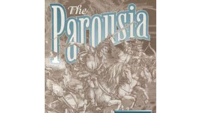

ASSOCIATING BIBLE ESCHATOLOGY WITH THE FALL OF JERUSALEM TO THE ROMAN ARMIES LED BY GENERAL TITUS DURING THE SIGNIFICANT 70TH YEAR OF THE FIRST CENTURY
"Romano-Judaean Eschaton" View Dates to Before 63 B.C.
"It is no exaggeration to say that the Fall of Jerusalem is the most significant national event in the history of the world."
The arch of Titus and Spoils of the Temple
ONLINE WRITINGS SUITE
FREE ONLINE BOOKS
2,000 Years of Fulfilled Prophecy
JOSEPHUS 'WARS OF THE JEWS' LIBRARY
2,000 Years of Josephus
THE FIRST CENTURY ROMAN EMPIRE
The Context of First Century Studies
PRETERIST STUDY ARCHIVE
Topics Arranged for Research

THE PAROUSIA
CHURCH-STATE RELATIONS
The Book of Revelation
AN INTRODUCTION TO THE PAROUSIA
by James Stuart Russell (1878)
WRITTEN BY TODD DENNIS, CURATOR
February 5, 2013
IDEALIST METHOD OF INTERPRETATION
Long Association with Preterism
DANIEL'S PROPHECY
CHRONOLOGICAL TREATISE
Daniel's Weeks
BENJAMIN MARSHALL
"Second Generation Modern Preterist"
Matt 21:33-45
To finish the transgression
John 1:29
Make an end of sins
DR. SAMUEL LEE
Information on Dr. Samuel Lee
of Cambridge, England
An Inquiry into the Nature,
Progress and End of Prophecy
PRELIMINARY DISSERTATIONS
on Eusebius' Theophany
EUSEBIUS'S TEHOPHANIA
Bishop of Caesarea
HENRY HAMMOND
Information on Henry Hammond
The father of English Exegesis
PARAPHRASE and ANNOTATIONS
Upon all the Books of the New Testament
HERBERT THRONDIKE
Study Archive
GROTIUS
Annotations in Apocalypse
OFFICIAL TERM FOR AD70 / 135
FRAGMENT FROM AD 74 to 139
Discovered in police bust
CONSTANTINE THE GREAT
Roman Emperor
HANDEL'S MESSIAH
The Destruction of Jerusalem
THE CHRISTIAN FLIGHT TO PELLA
Interpretation and Fulfillment in the Apostolic Church